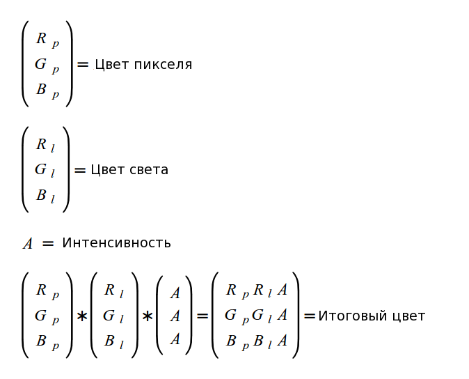

Урок 17 - Фоновое освещение
Свет - одна из наиболее важных тем в сфере 3D графики. Правильное его моделирование добавляет визуальной привлекательности сцене. Слово "моделирование" используется из-за того, что вы не можете имитировать именно то, что делает природа. Настоящий свет состоит из огромного числа мельчайших частиц, названых "фотонами", которые ведут себя как волны и частицы одновременно (корпускулярно-волновой дуализм). Если вы попытаетесь посчитать в программе влияние каждого фотона, то вы очень быстро выйдите за пределы компьютерных возможностей.
Хотя, некоторые модели света, которые разрабатывались годами, позволяют свету падать на объекты и делать их видимыми. Эти модели становятся все сложнее и сложнее, как и вся сфера 3D графики, благодаря увеличению мощности компьютеров. В серии следующих уроков мы пройдемся по основным моделям освещения, которые хоть и проще, но все равно вносят огромный вклад в общую атмосферу сцены.
Основные модели света называются 'фоновое(Ambient) / рассеянное(Diffuse) / отраженное(Specular)'. Пример фонового света - это когда вы вышли обычным солнечным днем на улицу. Не смотря на то, что солнечные лучи проходят через облака и падают под разным углом в различные места, большинство вещей хорошо видны, даже если они в тени. Так как свет отражается от всего, то, в конечном счете, он освещает все объекты, даже если они не находятся под прямыми лучами солнца. Даже лампочка в комнате ведет себя схоже с солнцем в том плане, что фоновый свет распространяется равномерно по всей комнате, если она не слишком большая, разумеется. У модели фонового света нет позиции, направления, и он одинаково влияет на всю сцену.
Диффузный свет подчеркивает тот факт, что угол, под которым свет падает на поверхность, влияет на яркость освещаемого объекта. Когда свет падает на объект, одна сторона будет ярче по сравнению с другой стороной (стороны не прямо перед источником света). Мы только что видели, что солнечный свет не имеет конкретного направления. Тем не менее, даже солнце имеет рассеянные свойства в своем свете. Когда он падает на высотное здание, вы можете с легкостью заметить, что одна сторона ярче чем другая. Главный параметр рассеянного света - это его направление.
Отраженный свет - это больше свойство самого объекта чем света. Это и есть блики, когда свет падает под определенным углом и зритель расположен в определенной позиции. Для примера, машина в яркий солнечный день временам может блестеть своими краями. При подсчете отраженного света требуется внимание и к направлению света, под которым он падает (и отражается), и позиции зрителя.
В 3D приложениях вы обычно не создаете фоновое, рассеянное или отраженное освещение напрямую. Вместо этого вы используете источники света такие как солнце (на улице), лампочка (внутри помещения) или фонарь (в пещере). Такие источники могут состоять из комбинаций фоновой, рассеянной и отраженной интенсивности, а так же специальными свойствами. Например, фонарик имеет световой конус, и вещи, которые далеки от него, не освещаются совсем.
В следующих уроках мы разработаем несколько полезных источников света и изучим основные модели света по ходу дела.
Мы начнем с источника, называемого "направленным светом". Направленный свет имеет направление, но без какой-либо конкретной позиции. Это значит, что все лучи света параллельны друг другу. Направление задается вектором, и этот вектор используете для подсчета влияния света для всех объектов сцены, не зависимо от их позиции. Солнце прекрасно вписывается в категорию направленного света. Если вы попробуете подсчитать угол, под которым падают лучи солнца, для соседних зданий, то он окажется одинаковым (т.е. разница будет крайне мала). Это происходит из-за того, что солнце находится на расстоянии 150 миллионов километров. Короче говоря, мы не учитываем его позицию, только направление.
Другое важное свойство направленного света в том, что яркость остается постоянной, не зависимо от расстояния до освещаемого объекта. Это противоположность другому источнику света, который мы изучим в следующих уроках, точечный свет, чья яркость убывает при удалении объекта (т.е. лампочка).
Следующее изображение иллюстрирует направленный свет:

Мы уже видели, что солнце имеет как фоновые, так и рассеянные свойства. Мы собираемся разработать фоновую часть сейчас, а рассеянную в следующем уроке.
В предыдущем уроке мы видели как получить цвет пикселя из текстуры. Цвет имеет 3 канала (красный, зеленый и голубой), и каждый канал представляет собой 1 байт. Это значит, что значение цвета колеблется от 0 до 255. Различные комбинаций каналов создают различные цвета. Если все равны 0, то цвет черный. Белый если все равны 255. Все другие где-то между ними. Изменяя все значения на некоторое число вы можете один из основных цветов делать ярче или темнее (зависит от коэффициента).
Когда белый свет падает на поверхность, то отражаемый цвет - это просто цвет поверхности. Он может стать ярче или темнее в зависимости от силы источника света, но останется прежним. Если источник света чистый красный (255,0,0), то отраженный цвет будет только одним из оттенков красного. Это происходит из-за того, что свет не имеет зеленого и голубого каналов, которые могли бы отразится от поверхности. Если поверхность синяя, то в итоге получим абсолютно черный цвет. Суть заключается в том, что свет может только повлиять на фактический цвет объекта, но не может "нарисовать" его.
Мы будем указывать цвет источника света как тройку вещественных чисел в отрезке [0-1]. Умножая цвет объекта на цвет света мы получим отраженный цвет. Однако, мы так же хотим взять интенсивность окружающего света во внимание. Поэтому фоновая интенсивность будет указана в виде единственного вещественного числа в отрезке [0-1], которая будет так же умножаться на все каналы отраженного цвета, сразу после его вычисления. Это и будет итоговый цвет. Следующая формула подведет итог нашим выводам:

В примере кода к этому уроку у вас будет возможность поиграть со светом через кнопки 'a' и 's', которые увеличивают или уменьшают интенсивность фонового света, и вы увидите эффект на пирамиде из прошлого урока. Это только фоновая часть, так что направления еще нет. Мы это изменим в следующем уроке, когда мы будем изучать рассеянный свет. Пока что пирамида будет выглядеть одинаково, не зависимо от вашего положения.
Фоновое освещение часто стараются избегать. Это из-за того, что местами появляются артефакты и простота реализации не сильно способствует реализму сцены. Используя передовые методы, такие как глобальное освещение можно устранить необходимость фонового света, а так же свет, который отражается от объекта и падает на другие объекты, может быть принят во внимание. Так как мы еще не дошли до этого, то вам обычно будет требоваться фоновое освещение для того, что бы не возникало ситуаций, когда одна сторона объекта освещена, а другие полностью темные. В конце концов, получение качественного света требует долгого регулирования настроек.
Прямиком к коду!
Наш код растет и становится все более сложным, такая традиция будет продолжаться. В этом уроке в дополнении к реализации фонового освещения, мы так же сделаем крупное переоформление кода. Это позволит сделать добавление кода в следующих уроках проще и удобнее. Главные отличия - это:
- Инкапсулируем управление шейдерами в класс Technique. Этот класс включает такие возможности как компиляция и линковка. Начиная с этого момента мы будем получать наши визуальные эффекты из классов, полученных из класса Technique.
- Перемещение инициализации GLUT и его функций обратного вызова в компонент GLUTBackend. Он регистрирует себя на получение функций обратного вызова и GLUT'а и передает их приложению через интерфейс C++, названный ICallbacks.
- Перемещение глобальных функций и переменных файла main.cpp в класс, который является "приложением". В будущем мы расширим его в базовый класс для всех приложений, который будет предоставлять основной функционал. Этот подход очень популярен во многих игровых движках и фреймворках.
Большая часть кода (не считая света) - не нова и просто реорганизована согласно положениям выше. Поэтому рассмотрены только новые заголовки.
glut_backend.h:24
void GLUTBackendInit(int argc, char** argv);
bool GLUTBackendCreateWindow(unsigned int Width, unsigned int Height, unsigned int bpp, bool isFullScreen, const char* pTitle);
Почти весь код, затрагивающий GLUT, был перемещен в компоненту "GLUT backend", которая упрощает инициализацию GLUT'а и создает окно используя простую функцию выше.
glut_backend.h:28
void GLUTBackendRun(ICallbacks* pCallbacks);
После инициализации GLUT'а и создания окна наступает момент для запуска главного цикла GLUT, используя общую функцию выше. Это нововведение - интерфейс ICallbacks, который поможет в регистрации функций обратного вызова. Вместо того, что бы приложение само регистрировало функции, теперь этим будет заниматься интерфейс, регистрирующий свои private функции, и доставлять события в объект, указанный в вызове функции выше. Класс главного приложения будет часто обращаться к этому интерфейсу, просто передавая параметры в GLUTBackendRun. Этот подход реализован уже в этом уроке.
technique.h:25
class Technique
{
public:
Technique();
~Technique();
virtual bool Init();
void Enable();
protected:
bool AddShader(GLenum ShaderType, const char* pShaderText);
bool Finalize();
GLint GetUniformLocation(const char* pUniformName);
private:
GLuint m_shaderProg;
typedef std::list<GLuint> ShaderObjList;
ShaderObjList m_shaderObjList;
};
В предыдущих уроках ответственность за рутинную работу по компиляции и линковки шейдеров лежала на приложении. Класс Technique поможет обернув основной функционал внутри себя и позволит наследуемым классам сфокусироваться только на главной задаче (иначе говоря на "технике").
Каждая техника должна во-первых инициализацироваться через вызов функции Init(). Наследуемые техники должны вызывать Init() для основного класса (в котором создается программный объект OpenGL) и могут добавить свою дополнительную инициализацию здесь.
После того, как объект техники создан и инициализирован, обычный порядок для наследуемых классов в вызове protected функции AddShader() столько раз, сколько шейдеров GLSL требуется (предусмотрено в массиве символов). Наконец, Finalize() вызывается для линковки объектов. Функция Enable() на самом деле выполняет glUseProgram(), так что она должна быть вызвана всякий раз, когда мы меняем технику перед вызовом функции отрисовки
Этот класс отслеживает промежуточные объекты и после линковки удаляет их через glDeleteShader(). Это помогает уменьшить количество ресурсов, которые ваше приложение потребляет. Для наибольшей производительности приложения OpenGL часто компилируют все шейдеры во время загрузки, а не во время исполнения программы. Удаляя объекты незамедлительно после линковки вы помогаете OpenGL не тратить ресурсы по напрасно. Объект программы удаляет себя в деструкторе через glDeleteProgram().
main.cpp:49
class Main : public ICallbacks
{
public:
Main(){
...
}
~Main(){
...
}
bool Init(){
...
}
void Run(){
GLUTBackendRun(this);
}
virtual void RenderSceneCB(){
...
}
virtual void IdleCB(){
...
}
virtual void SpecialKeyboardCB(int Key, int x, int y){
...
}
virtual void KeyboardCB(unsigned char Key, int x, int y){
...
}
virtual void PassiveMouseCB(int x, int y){
...
}
private:
void CreateVertexBuffer(){
...
}
void CreateIndexBuffer(){
...
}
GLuint m_VBO;
GLuint m_IBO;
LightingTechnique* m_pEffect;
Texture* m_pTexture;
Camera* m_pGameCamera;
float m_scale;
DirectionalLight m_directionalLight;
};
Это скелет главного класса приложения, который инкапсулирует оставшийся код, с которым мы уже знакомы. Init() берет на себя заботу о создании эффектов, загрузки текстуры и создание буферов вершин и индексов. Run() вызывает GLUTBackendRun() и передает себя в качестве параметра. Так как класс наследует интерфейс ICallbacks, то все входящие и исходящие события GLUT передаются в собственные методы класса. К тому же, все переменные, которые раньше были глобальными, теперь private атрибуты класса.
lighting_technique.h:25
struct DirectionalLight
{
Vector3f Color;
float AmbientIntensity;
};
Это начало определения направленного света. Пока что только фоновая часть реализована, а направленная отсутствует. Мы добавим направление в следующем уроке, когда мы изучим рассеянное освещение. Структура хранит 2 поля - цвет и фоновую интенсивность. Цвет определяет какой канал цвета может отражен и в какой интенсивности. Пример: если цвет (1.0, 0.5, 0.0), то красный канал отразится полностью, зеленый наполовину, а синий потеряется целиком. Это происходит из-за того, что объект может отражать только падающие лучи (источники света различные, они испускают свет по разному и требуют обработки по отдельности). В случае с солнцем его обычный цвет чисто белый (1.0, 1.0, 1.0).
Фоновая интенсивность определяет насколько темный или яркий свет. Вы можете иметь полностью белый с интенсивностью 1.0, тогда объект будет хорошо освещен, или 0.1, тогда объект разглядеть можно будет только с большим трудом.
lighting_technique.h:31
class LightingTechnique : public Technique
{
public:
LightingTechnique();
virtual bool Init();
void SetWVP(const Matrix4f& WVP);
void SetTextureUnit(unsigned int TextureUnit);
void SetDirectionalLight(const DirectionalLight& Light);
private:
GLuint m_WVPLocation;
GLuint m_samplerLocation;
GLuint m_dirLightColorLocation;
GLuint m_dirLightAmbientIntensityLocation;
};
Это первый пример использования класса Technique. LightingTechnique наследует этот класс, и представляет собой инвентарь света, используя основой функционал компиляции и линковки, которые предлагает базовый класс. Функция Init() должна быть вызвана после создания объекта. Она просто вызывает Technique::AddShader() и Techique::Finalize() для генерации программы GLSL.
lighting_technique.cpp:38
#version 330
in vec2 TexCoord0;
out vec4 FragColor;
struct DirectionalLight
{
vec3 Color;
float AmbientIntensity;
};
uniform DirectionalLight gDirectionalLight;
uniform sampler2D gSampler;
void main()
{
FragColor = texture2D(gSampler, TexCoord0.xy) *
vec4(gDirectionalLight.Color, 1.0) *
gDirectionalLight.AmbientIntensity;
}
Вершинный шейдер остался без изменений в этом уроке. Он продолжает обрабатывать позицию (умножением исходной на матрицу WVP) и координаты текстур. Все новые вычисления перешли в фрагментный шейдер. Среди нового здесь слово "struct" для определения направленного света. Как вы видите, это слово используется практически так же, как и в C/C++. Структура идентична той, которую мы описали в приложении, и мы должны делать так, что бы приложение и шейдер могли обмениваться данными.
Появилась новая переменная направленного света типа DirectionalLight, которую приложение будет обновлять. Эта переменная используется для подсчета итогового цвета пикселя. Как и раньше мы находим сэмплер текстуры для получения изначального цвета. Затем мы умножаем его на цвет и интенсивность света. На этом завершаются расчеты фонового освещения.
lighting_technique.cpp:87
m_WVPLocation = GetUniformLocation("gWVP");
m_samplerLocation = GetUniformLocation("gSampler");
m_dirLightColorLocation = GetUniformLocation("gDirectionalLight.Color");
m_dirLightAmbientIntensityLocation = GetUniformLocation("gDirectionalLight.AmbientIntensity");
Для того что бы получить доступ к uniform-переменной типа DirectionalLight из приложения, мы должны получить адрес обоих параметров не зависимо друг от друга. Класс LightingTechnique имеет 4 GLuint адреса переменных для получения доступа к uniform-переменным в вершинном и фрагментном шейдерах. Позиции WVP и сэмплера получены знакомым способом. Цвет и интенсивность получены как написано выше - указывать имя uniform-переменной в шейдере следует за точкой и именем поля у структуры. Запись значений в эти переменные производится так же, как и в другие переменные ранее. Класс LightingTechnique предлагает 2 метода для назначения направления света и матрицы WVP. Класс Main вызывает их перед каждым вызовом отрисовки что бы обновить значения.
Этот урок позволяет вам поиграться с фоновой интенсивностью через кнопки 'a' и 's' для увеличения и уменьшения соответственно. Посмотрите функцию KeyboardCB() в классе Main что бы понять как это работает.